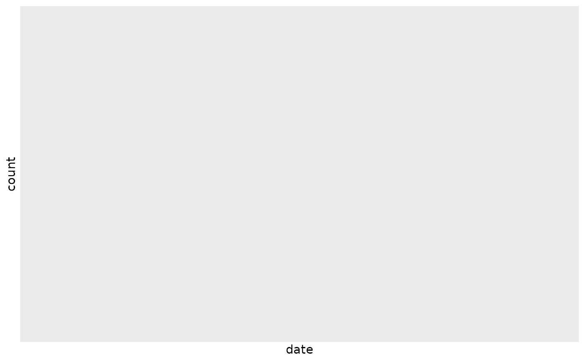
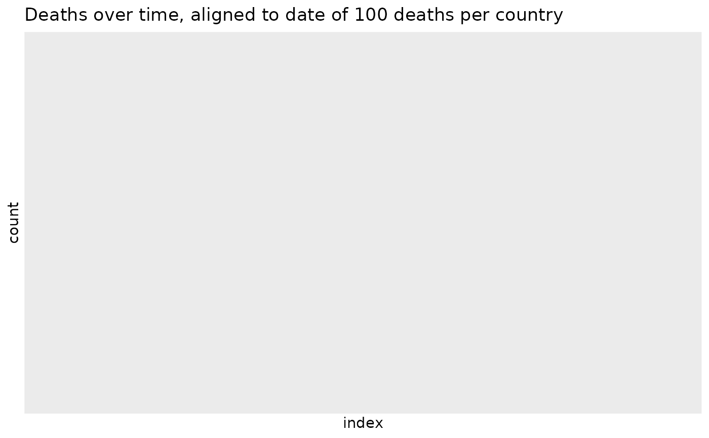

R/align_to_baseline.R
align_to_baseline.RdWhen endeavoring to compare epidemic curves (cases vs date, for example), particularly when making graphical displays, it is helpful to set a "time baseline" that aligns where all the curves start.
align_to_baseline(df, filter_criteria, date_column = "date", group_vars)data.frame that includes a date column and at least one other column for filtering, typically a case count.
an expression as would normally be specified
directly to dplyr::filter().
character(1) column name of the column for ordering the data to define a "beginning" of the curve. It is called a "date column", but anything with a natural ordering will likely work.
optional character() column_name(s) that specify
grouping done before calculating minimum dates. Concretely,
if the goal is to compare several countries, then the group_vars='country'
with a column in df called country.
A data.frame with a new column, index, that gives the
number of time intervals (typically days) from when the
baseline counts are first encountered, done by group.
This function takes this basic approach:
Filter all all data using the filter_criteria, expressed as a
dplyr::filter() expression.
Optionally group the dataset.
Find the minimum date left after applying the filter criteria
"Subtract" the minimum date (on a per group basis if grouping columns are used).
The result is a plot that shifts all the curves to start at the "same" starting time with respect to the "start" of the pandemic. For example, for the COVID-19 pandemic, China started much earlier than the rest of the world. To compare the time course of China versus other countries, setting the time to the point where each country had 100 cases allows direct comparison of the shapes of the countries' curves.
Other case-tracking:
beoutbreakprepared_data(),
bulk_estimate_Rt(),
combined_us_cases_data(),
coronadatascraper_data(),
covidtracker_data(),
ecdc_data(),
estimate_Rt(),
jhu_data(),
nytimes_county_data(),
owid_data(),
plot_epicurve(),
test_and_trace_data(),
usa_facts_data(),
who_cases()
Other plotting:
plot_epicurve()
library(dplyr)
library(ggplot2)
# use European CDC dataset
ecdc = ecdc_data()
head(ecdc)
#> # A tibble: 6 × 12
#> # Groups: location_name, subset [6]
#> date day month year location_name iso2c iso3c population_2019
#> <date> <dbl> <dbl> <dbl> <chr> <chr> <chr> <dbl>
#> 1 2019-12-31 31 12 2019 Afghanistan AF AFG 38041757
#> 2 2019-12-31 31 12 2019 Afghanistan AF AFG 38041757
#> 3 2019-12-31 31 12 2019 Algeria DZ DZA 43053054
#> 4 2019-12-31 31 12 2019 Algeria DZ DZA 43053054
#> 5 2019-12-31 31 12 2019 Armenia AM ARM 2957728
#> 6 2019-12-31 31 12 2019 Armenia AM ARM 2957728
#> # … with 4 more variables: continent <chr>,
#> # `Cumulative_number_for_14_days_of_COVID-19_cases_per_100000` <dbl>,
#> # subset <chr>, count <dbl>
dplyr::glimpse(ecdc)
#> Rows: 123,800
#> Columns: 12
#> Groups: location_name, subset [428]
#> $ date <date> 2019-12-…
#> $ day <dbl> 31, 31, 3…
#> $ month <dbl> 12, 12, 1…
#> $ year <dbl> 2019, 201…
#> $ location_name <chr> "Afghanis…
#> $ iso2c <chr> "AF", "AF…
#> $ iso3c <chr> "AFG", "A…
#> $ population_2019 <dbl> 38041757,…
#> $ continent <chr> "Asia", "…
#> $ `Cumulative_number_for_14_days_of_COVID-19_cases_per_100000` <dbl> NA, NA, N…
#> $ subset <chr> "cases", …
#> $ count <dbl> 0, 0, 0, …
# get top 10 countries by cumulative
# number of deaths
top_10 = ecdc %>%
dplyr::filter(subset=='deaths_weekly') %>%
dplyr::group_by(location_name) %>%
dplyr::summarize(deaths = max(count)) %>%
dplyr::arrange(dplyr::desc(deaths)) %>%
head(10)
#> Warning: no non-missing arguments to max; returning -Inf
top_10
#> # A tibble: 0 × 2
#> # … with 2 variables: location_name <chr>, deaths <dbl>
# limit ecdc data to "deaths" and
# top 10 countries
ecdc_top10 = ecdc %>%
dplyr::filter(location_name %in% top_10[['location_name']] & subset=='deaths_weekly')
plot_epicurve(ecdc_top10, color='location_name', case_column='count')

ecdc_top10_baseline = align_to_baseline(ecdc_top10, count>100, group_vars='location_name')
#> Warning: no non-missing arguments to min; returning Inf
plot_epicurve(ecdc_top10_baseline, date_column='index', color='location_name') +
ggtitle('Deaths over time, aligned to date of 100 deaths per country')
